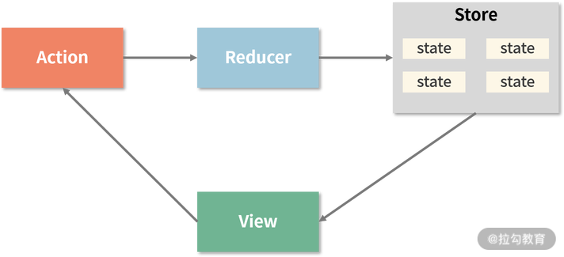

什么是 Flux
Flux 是 Facebook 用来构建客户端渲染 web 应用的应用框架。Flux 最重要的概念就是单向数据流，Flux 使用单向数据流来补充 React 的可组合式组件。相比一个正式的框架，它更像一种范式和思想，Redux 则是这种范式和思想的具体实现，当然 Redux 不严格遵循 Flux 的设定。
Flux 具有严格的单向数据流，Store 里数据的变化，只能是由 Dispatcher 派发的 Action 触发的。这保证了应用的状态是可预测的，避免了应用混乱的情况，让整个流程变得清晰简单。
当然，严格的单向数据流一方面增加开发者的学习成本，另一方面也增加了代码量，所以往往复杂的项目才需要使用 Flux 架构。
Flux 的架构
Flux 分成四个部分：
Dispatcher
Dispatcher 接收 Actions 并把 Actions 分发给注册在 Dispatcher 的 Store。Store
Store 存储整个应用的数据。Actions
Actions 定义了应用内部的 API。Actions 就是简单的 Objects，有一个type字段和一些数据。Views
Views 展示 Store 里的数据，Views 可以使用任何框架。
更详细了解 Flux 可阅读这篇文章这篇文章。

Redux 的架构
Redux 是基于 Flux 架构的产物，严格遵循单向数据流.Redux 很多地方与 Flux 一样，但并不完全与 Flux 设计保持一致。
Redux 分成四个部分：
View
用户界面，展示 Store 的数据和触发 Action。Action
Action 是一个函数，实现具体操作，然后将变化交给 Reducer。Reducer
Reducer 也是一个函数，负责对变化进行处理和分发。接收来自 Action 的变化，将新的数据变更到 Store。Store
Store 是应用的数据中心，展示在用户界面上。
Redux 的特点
可预测
Redux 让应用表现一致，可运行在不同的环境（浏览器、服务端、原生应用），并且非常容易测试。中心化
让应用状态和应用逻辑中心化，让 Redux 拥有超强的能力，例如撤销、重做、状态持久化等等。可调试
Redux DevTools 可以非常方便的知道应用状态在何时、何地、为什么、怎么发生了变化。Redux 的架构，让你能够记录这些变化，使用time-travel来进行调试，甚至可以将错误上报到服务器。灵活
Redux 可以和一切 UI 框架一起配合，并且有一个非常大的生态插件去满足你的需求。